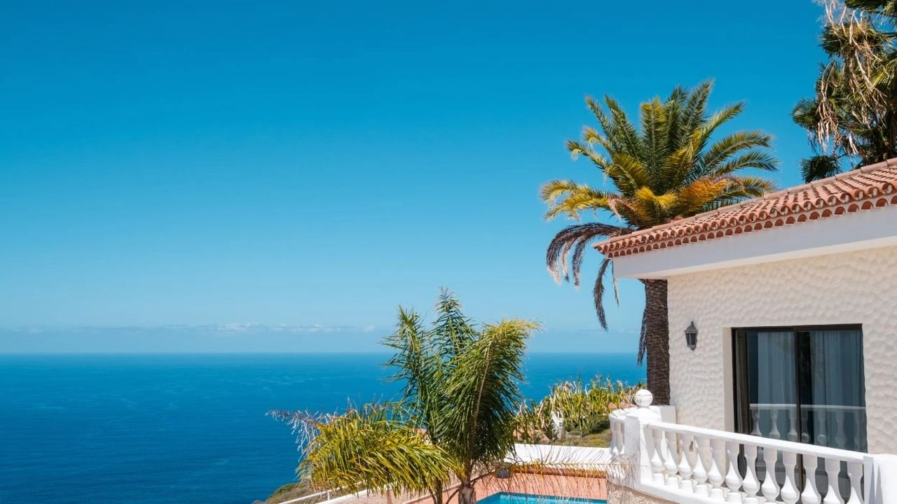
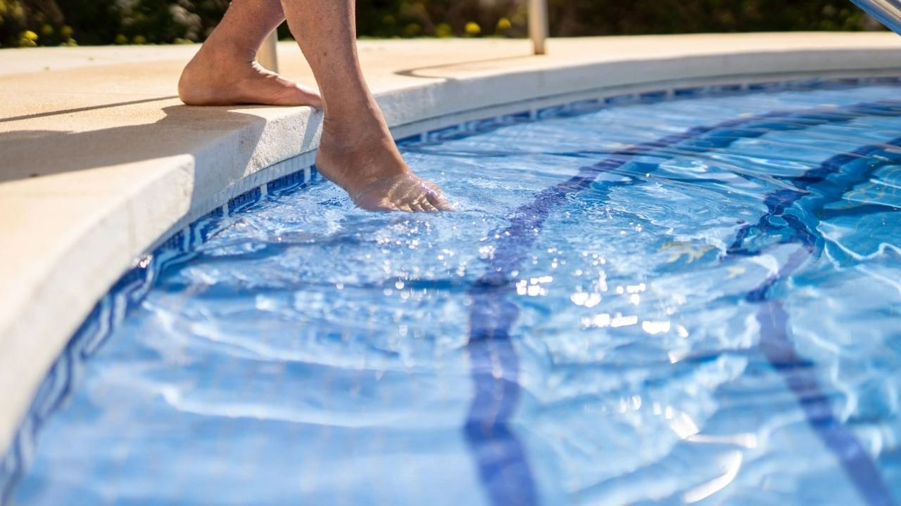
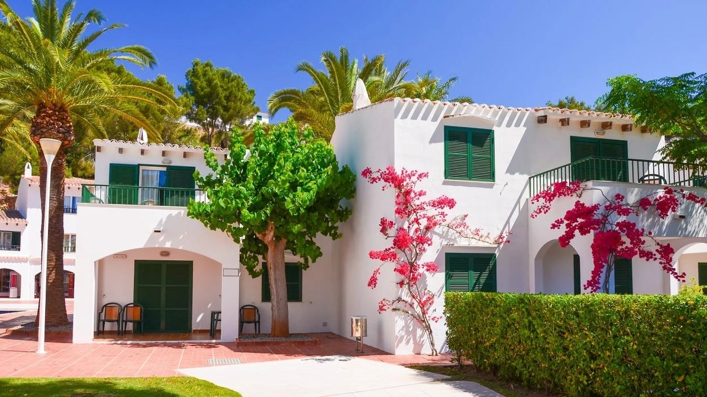
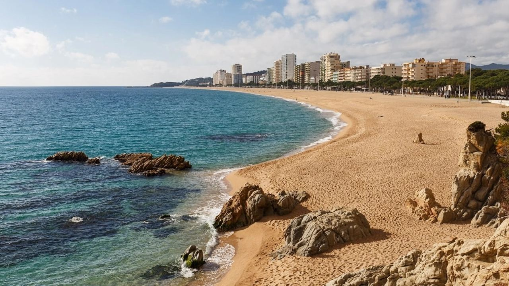

Buying in Spain · Choosing a home
New Build or Resale Property in Spain – How to Choose
 By Aleksandra Kobus · · updated · 4 min read
By Aleksandra Kobus · · updated · 4 min read

In short: New builds cost more per square metre and you pay 10% VAT plus 1.2–1.4% stamp duty, but you get legal warranties (1, 3 and 10 years), modern insulation and low running costs, and off-plan payments must be protected by a bank guarantee. Resale homes are often cheaper, in more central or established areas and ready at once. You pay transfer tax instead (9% in the Valencian Community, 11% above €1 million, 7% in Andalusia) and must check the condition, licences and debts carefully. Total buying costs end up similar, about 10–13% of the price.
One of the first choices when buying in Spain is whether to buy new from a developer or a resale home from a private owner. Both have clear advantages, and the right answer depends on your budget, timing and how you plan to use the home.
Here is how they compare on price, taxes, risk and daily life, and what to check in each case.
At a glance
| New build | Resale | |
|---|---|---|
| Price per m² | higher | often lower, more room to negotiate |
| Main tax | 10% VAT + 1.4% (Valencian Community) or 1.2% (Andalusia) stamp duty | transfer tax: 9% Valencian Community (11% above €1M), 7% Andalusia |
| Warranty | 1 year finishes, 3 years installations, 10 years structure (insured) | seller liable for hidden defects for 6 months |
| Energy rating | usually A or B | often E to G in older homes |
| Timing | off-plan: 12–30 months; key-ready: weeks | usually 4–8 weeks |
| Location | often edge of town, new areas | central and established areas |
| Customising | choose finishes if you buy early | what you see, renovation possible |
Buying new: the advantages

Warranties by law
Under the Spanish Building Act (Ley de Ordenación de la Edificación), the developer is responsible for:
- finishing defects for 1 year,
- defects in installations and anything that affects habitability for 3 years,
- structural defects for 10 years, backed by compulsory ten-year insurance (seguro decenal).
Low running costs
New homes are built to the current technical building code, with good insulation, efficient heat pumps and often solar panels. Most reach energy rating A or B, so air conditioning and heating cost much less than in an older home.
Paying in stages
Off-plan homes are usually paid in steps: a reservation fee, then about 20–40% during construction, and the rest at completion, when you can also take a mortgage. By law, every payment before completion must go into a special account and be covered by a bank guarantee or insurance (aval bancario), so you get your money back if the building is not finished.
Facilities
New developments often have communal pools, gardens, gyms, underground parking and sometimes a spa or coworking room. They do raise the community fees.
Buying resale: the advantages

- Location. Older homes are often in the best spots: the old town, the seafront or established areas near schools, shops and transport, where there is no land left to build.
- Price and space. You often get more square metres, larger plots and terraces for the money, and there is more room to negotiate.
- Speed. You see exactly what you buy and can move in or rent out within weeks.
- Character. Traditional villas, townhouses and fincas have a style that new builds rarely copy.
- A known community. You can see the neighbours, the fees and how well the building is run.
The downside is that you may need to renovate, and running costs are often higher. Budget for that in your offer.
What to check in each case
New build
- The developer's track record and finished projects.
- The building licence and, for off-plan, the bank guarantee for every payment.
- The specifications, plans and delivery date in the contract, and what happens if it is late.
- At completion: the first occupation licence or responsible declaration, a snagging inspection and the energy certificate.
- Extra VAT: plots and garages sold separately can carry 21% instead of 10%.
Resale
- The Nota Simple: owner, mortgages and charges.
- A survey of the building, roof, damp, pool and installations.
- That extensions, pools and terraces are legal and registered.
- No debts: community fees certificate and the last IBI receipt.
- If you plan to rent to tourists, that a licence can be obtained in that building and town.
The real cost: an example
Two homes for €400,000 in the Valencian Community:
| New build | Resale | |
|---|---|---|
| Main tax | VAT 10%: €40,000 | ITP 9%: €36,000 |
| Stamp duty | AJD 1.4%: €5,600 | – |
| Notary, registry, lawyer (about 1.5–2%) | about €7,000 | about €7,000 |
| Renovation or furnishing | furniture, appliances | depends on condition |
| Total before furnishing | about €452,600 | about €443,000 |
In Andalusia the gap is larger: 7% transfer tax for resale against 10% VAT plus 1.2% stamp duty for a new build.
Which one suits you?
Choose a new build if you want low maintenance, modern comfort and facilities, are happy to wait or to live in a newer area, and plan to rent the home out to holiday guests who expect a pool and modern finishes.
Choose a resale home if location matters most, you want more space for your budget, need the home soon or like the idea of renovating to your taste.
Many buyers look at both. Our guide to buying property in Spain explains the purchase steps, which are the same for both.
Frequently asked questions
Is a new build or a resale home cheaper in Spain?
Resale homes are usually cheaper per square metre. Buying costs are similar, about 10–13% of the price, because new builds pay VAT and stamp duty while resale homes pay transfer tax.
Is my money safe when I buy off-plan?
Spanish law requires every payment before completion to be paid into a special account and covered by a bank guarantee or insurance. Make sure you receive a guarantee for each payment.
What warranty does a new home in Spain have?
One year for finishing defects, three years for installations and habitability and ten years for structural defects, covered by compulsory ten-year insurance.
Can I negotiate on a new build?
Sometimes, on the last units of a project or on extras such as furniture, parking or a storage room. Resale prices are generally more open to negotiation.
Which is better for holiday rentals?
New builds with a pool are popular with guests, but what matters most is whether you can get a tourist licence in that building and town. Check this before buying either type.
See both and compare

We sell new developments and resale homes on the Costa Blanca and Costa del Sol, so we can show you both side by side. Contact us with your budget and wishes.
Sources: BOE – Building Act (Ley 38/1999, LOE), warranties · BOE – Ley 20/2015, first additional provision (off-plan deposits)